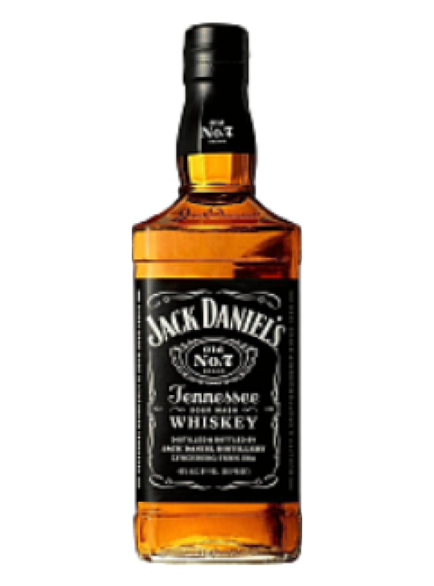
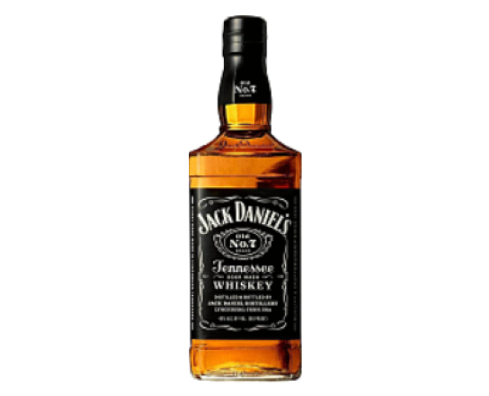

<section class="card">
    <div class="container">
        <div class="card__body">
            <div class="card__body-info">
                
                
                <a class="card__body-info-back" href="">
                    <svg width="80" height="80" viewBox="0 0 80 80" fill="none" xmlns="http://www.w3.org/2000/svg">
                        <g filter="url(#filter0_d_28_96)">
                            <rect x="13" y="13" width="50" height="50" rx="25" fill="#F0D9DA" />
                            <path
                                d="M33.0507 43.8699C31.4941 41.0145 27.1807 37.9999 27.1807 37.9999C27.1807 37.9999 31.4928 34.9852 33.0507 32.1299"
                                stroke="#17174D" stroke-width="2.00069" stroke-miterlimit="22.9256"
                                stroke-linecap="square" />
                            <path d="M28.7087 37.9609H48.8193" stroke="#17174D" stroke-width="2.00069"
                                stroke-miterlimit="22.9256" stroke-linecap="square" />
                        </g>
                        <defs>
                            <filter id="filter0_d_28_96" x="0" y="0" width="80" height="80" filterUnits="userSpaceOnUse"
                                color-interpolation-filters="sRGB">
                                <feFlood flood-opacity="0" result="BackgroundImageFix" />
                                <feColorMatrix in="SourceAlpha" type="matrix"
                                    values="0 0 0 0 0 0 0 0 0 0 0 0 0 0 0 0 0 0 127 0" result="hardAlpha" />
                                <feOffset dx="2" dy="2" />
                                <feGaussianBlur stdDeviation="7.5" />
                                <feComposite in2="hardAlpha" operator="out" />
                                <feColorMatrix type="matrix"
                                    values="0 0 0 0 0.0908334 0 0 0 0 0.0908334 0 0 0 0 0.3 0 0 0 0.1 0" />
                                <feBlend mode="normal" in2="BackgroundImageFix" result="effect1_dropShadow_28_96" />
                                <feBlend mode="normal" in="SourceGraphic" in2="effect1_dropShadow_28_96" result="shape" />
                            </filter>
                        </defs>
                    </svg>
                </a>
                <div class="card__body-info-main">
                    <span class="card__body-info-main-name">
                        Виски
                    </span>
                    <div class="card__body-info-main-title">
                        <span>Jack Daniels</span>
                        
                        <a class="">
                            <svg width="32" height="32" viewBox="0 0 32 32" fill="none" xmlns="http://www.w3.org/2000/svg">
                                <circle cx="8.61539" cy="15.9999" r="4.11538" stroke="#17174D" />
                                <circle cx="23.3847" cy="8.61539" r="4.11538" stroke="#17174D" />
                                <circle cx="23.3847" cy="23.3847" r="4.11538" stroke="#17174D" />
                                <path d="M12.3076 14.1537L19.2307 10.4614" stroke="#17174D" />
                                <path d="M12.3076 18.3077L19.2307 22" stroke="#17174D" />
                            </svg>
                        </a>
                    </div>
                    <div class="card__body-info-main-block">
                        <div class="card__body-info-main-block-item">
                            <span>Артикул</span>
                            <p>108052900</p>
                        </div>
                        <div class="card__body-info-main-block-item">
                            <span>Тип</span>
                            <p>Теннесси</p>
                        </div>
                        <div class="card__body-info-main-block-item">
                            <span>Бренд</span>
                            <p>Jack Daniels </p>
                        </div>
                    </div>
                    <div class="card__body-info-main-block">
                        <div class="card__body-info-main-block-item">
                            <span>Страна/Регион</span>
                            <p>США</p>
                        </div>
                        <div class="card__body-info-main-block-item">
                            <span>Крепость</span>
                            <p>40%</p>
                        </div>
                    </div>
                    <div class="card__body-info-main-vol">
                        <span class="card__body-info-main-vol-title">
                            Объем
                        </span>
                        <div class="card__body-info-main-vol-items">
                            <span class="">0,500 л</span>
                            <span class="active">0,700 л</span>
                            <span class="dis">0,750 л</span>
                            <span class="dis">1,000 л</span>
                        </div>
                    </div>
                    <a href="" class="card__body-info-main-rev">
                        Отзывы 15
                    </a>
                    <button class="card__body-info-main-btn">
                        Запрос цены
                    </button>
                </div>
            </div>
            <div class="card__body-desc">
                <span class="card__body-desc-title">
                    Описание
                </span>
                <p>
                    Изготавливается из кукурузного (используется более 51 % кукурузы) и зернового спирта, очистка которого
                    осуществляется с помощью угольных фильтров из теннессийского сахарного клена. Выдерживают крепкий
                    алкогольный напиток в дубовых бочках ручной работы не менее 3-х лет, при этом точный срок выдержки
                    производитель не указывает. <br><br>
                    Фильтрация виски происходит через древесный уголь, полученный от сжигания канадского сахарного клёна.
                    Этот процесс уникален для создания виски Теннесси и известен как процесс графства Линкольн (Lincoln
                    County Process). Именно особенности фильтрации заставили правительство штата зарегестрировать этот
                    продукт как продукт защищенного географического происхождения, а именно Tennessee Sour Mash —
                    «теннессийский виски из кислой браги». <br><br>
                    Имеет янтарный цвет с вариациями от средненасыщенного до темного с очень хорошей яркостью. Аромат виски
                    достаточно легкий и гладкий, с приятной сладостью, нотками специй, маслянистыми оттенками орехов,
                    дымными нюансами.
Вкус гладкий и мягкий, с оттенками карамели и древесины, долгим дымным послевкусием.
                    Виски пьют в чистом виде с кубиками льда. Можно добавить содовую или просто воду. Уместен в
                    разнообразных коктейлях и лонг-дринках.
                </p>
            </div>
        </div>
    </div>
</section>